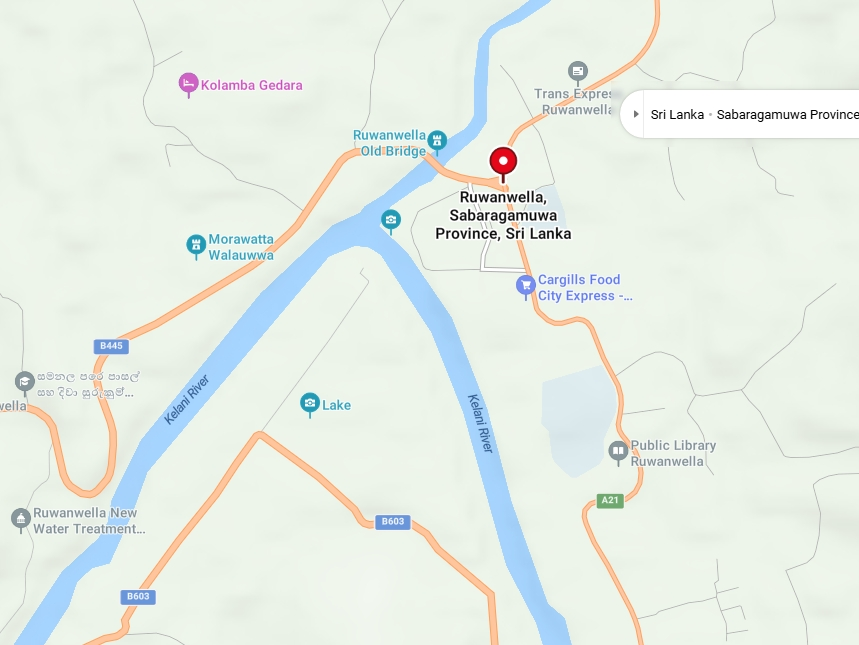
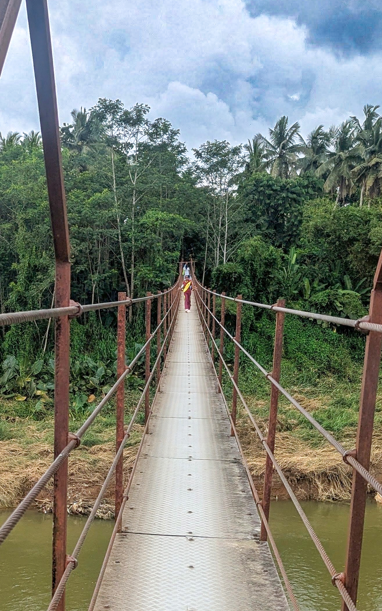
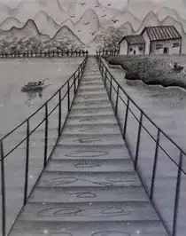

| DESTINATION | DISTANCE | TIME (min) |
|---|---|---|
| AVISSAWELLA | 17.7 km | 25 |
| KEGALLE | 30 km | 80 |
| YATIYANTOTA | 8.3 km | 10 |
| DEHIOWITA | 9.9 km | 15 |
| COLOMBO | 70.2 km | 120 |
| KANDY | 68.8 km | 110 |
| RATHNAPURA | 51.5 km | 150 |


It is the longest hanging bridge in Sri Lanka. Built across the Kelani River near its confluence with the Gurugoda Oya, it directly connects Ruwanwella town with nearby villages such as Nikawalamulla and Kurupatta to provide easy daily travel for the local residents.